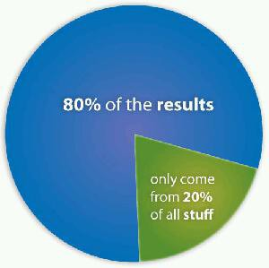
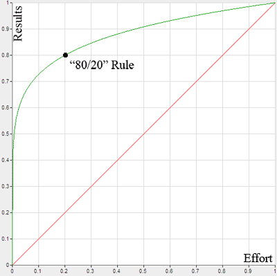
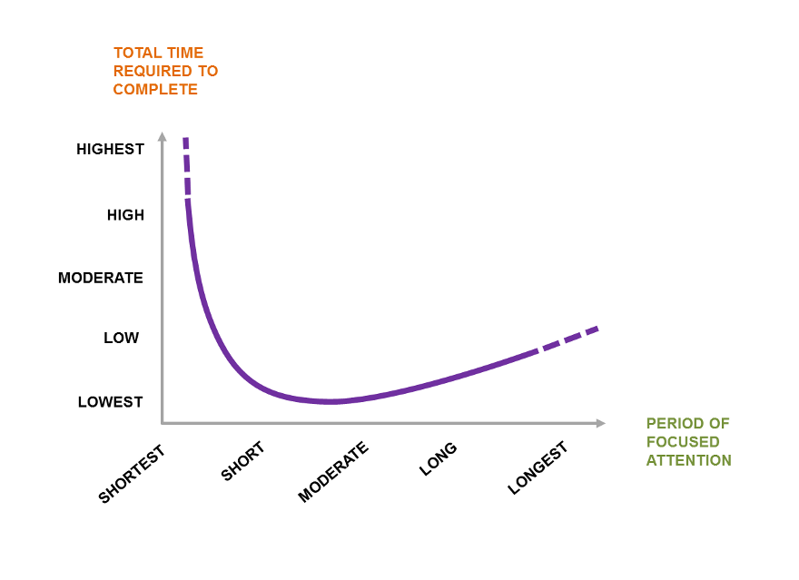
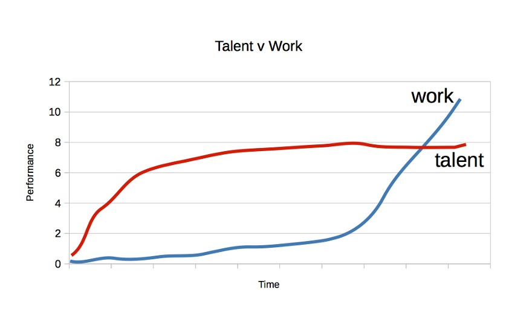
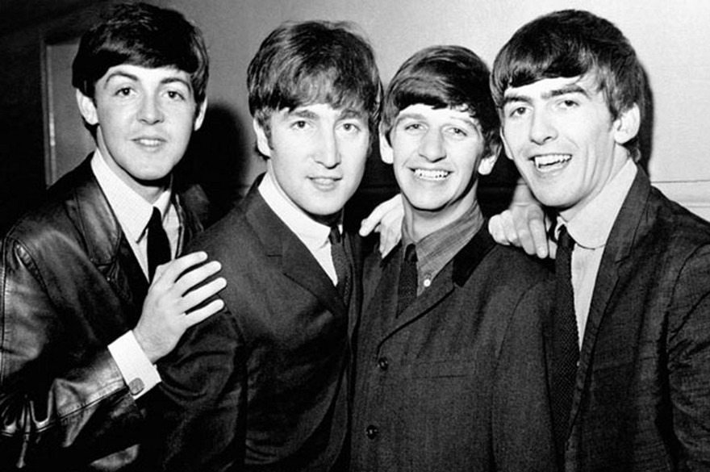
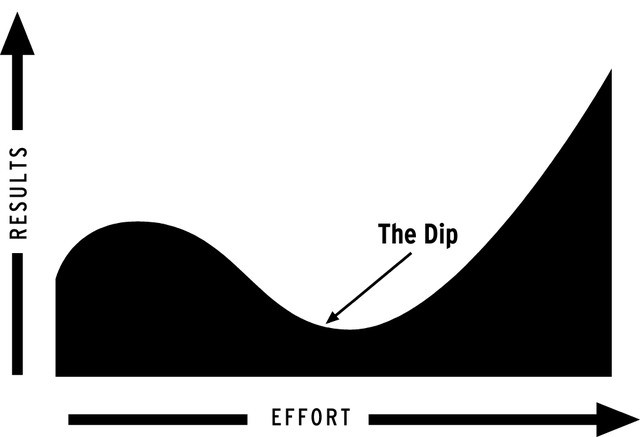
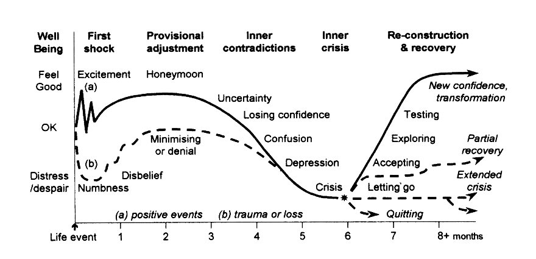

更快学会任何东西的终极指南
在这个资讯爆炸、新东西层出不穷的时代，学习是件终生的事业。书到用时方狠少，很多时候我们总是后悔当初没学，然后抱怨时间不够多，最后开始反思—时间对每个人来说都是公平，所以我们的问题应该是如何才能更快地学会东西？
也许 Sean Kim 的这篇学习终极指南可以参考。
如何缩短学习曲线这个课题已经被研究了几十年。其中讨论到的一些加速学习进程的核心原则这份指南都会讨论到。利用好这些原则，无论你学的是语言、乐器等等，都可以学得更快。
在当今我们生活的这个时代，如果你想过上一段非凡的人生，就得掌握快速学习这项本领。
不做重复工
我们学东西有个倾向是试图自己掌握，但是有个学会的人帮助可以节省你很多的时间和精力。
想想自己以前是怎么学语言或技能的。是不是一开始走了很多弯路？有了你的帮助，后面的人再学是不是就可以避免很多你犯过的错误？
要想更快掌握东西，第一步就得去请教这个领域做得最好的人，然后按照他开辟好的路走下去就行了（等你到一定水平了再走自己的路）。
正如Tony Robbins所言：
许多伟大的领袖已经证明，掌握任何技能、策略或目标的最快方式就是照着前面的人开辟的路走下去。
如果你能找到已经拿到你想要的结果的人并且采取跟他们一样的行动，你也可以获得同样的结果。
你的年龄、性别、背景如何都没有关系，照着做让你可以快速跟踪并以短得多的时间实现你的梦想。
在今天这个时代，你几乎从通过书本、博客、培训视频、咨询或网上获得任何解决方案。
毕加索曾说过：
好的艺术家抄袭 伟大的艺术家剽窃。
（这话乔布斯也剽窃过。:)）
技能解构
破解学习曲线的下一步是将要掌握的技能解构为基本要素。把这些要素分解，然后找出最重要的首先进行练习。
这个做法源自帕累托的2/8原则：即用20%的努力获得80%的结果。

这个原则几乎到处都可以体现：
- 商业（80%的销售来自20%的客户）
- 员工效能（80%的成果出自20%的员工）
- 快乐（80%的快乐来自20%的关系）
- 旅游体验（旅游80%可用20%的精彩时刻概括）
下面这张图是 2/8 原则的另一种表现形式：

2/8 原则的要点是只有很少的东西会对我们的生活（包括学习）产生很大影响。
那么我们的目标就是把这能产生80%结果的20%的学习材料独立出来。
实际上一些快速学习专家早已采取这种意识形态。
Josh Kaufman在TED演讲中提出，掌握一项技能并不需要1万小时的练习。关键是前面的20小时要学会最重要的子技能获得最大的效应：
动作与认知技能获取领域的若干研究表明，新技能前面几个小时的练习对表现产生了最大的影响。
一般模式是这样的：一开始时你很害怕，但你学会技能最重要的部分之后改进就会非常快。
举例：
学习一门乐器必须知道少数最常见的和弦，这样80%的曲子都能弹。
学习新外语应该聚焦在最常见的1500到2000个字，这样80%的文字都能懂。
一心不能二用
多任务是我们在连续通告和移动应用时代培养出来的一种罪恶快感。每10分钟就要查查邮件、刷刷微博、看看微信或者跟经过的同事聊聊天等都是表现。
但是多任务处理会成为加快学习的最大障碍。
可以想想自己的电脑。
浏览器打开了20个以上标签页时，计算机就会开始变慢，然后执行后续动作就会放缓。

研究表明，人如果分心后平均需要25分钟才能让心思回到手头的工作上。
更值得注意的是，加州大学的Irvine发现，自己的同事往往只干了11分钟就开始分心。
长期专注也一样。我们很多人都无法腾出6到12个月以上的时间去学习一项技能，因为总会有新项目、新想法、新爱好冒出来。
当我们决定把注意力转移到新的事情上面时，往往很难再对之前技能保持同样的激情和专注。
在解构出能产生最大结果的子技能之后，就得把精力集中在改进这些子技能上，在掌握这些子技能之前不要学其他任何东西。
重复练习
这是我们大多数人最纠结的部分。
是的！更快掌握任何东西的关键是练习。
这需要频繁持续地反复练习同一种技能，直到不假思索就能下意识地做到。
全世界表现最好的人都理解这个学得更快成为最佳的“秘密”，但是却很少会讨论它的重要性，因为这听起来并不性感。

佛罗里达州立大学的K. Anders. Ericsson指出：
大家认为，专家表现跟一般表现之所以有质的不同，一定是因为专家有与生俱来的天分。
这种看法让科学家忽视了按照普通心理学定律原则去检视专家的表现。
寻求即时反馈
1960年当时还还默默无名的甲壳虫乐队去德国汉堡的场子演出。
报酬低、音效差、听众不欣赏就是当时他们的感受。如何避免呢？
不停地练习然后马上听取反馈迫使他们变得越来越好。
Macolm Gladwell在《异类》中总结认为，这是甲壳虫登上音乐殿堂巅峰的关键不同。
哥几个并不只是呆在车库里面埋头练习，他们同时还努力站在现场观众面前，无论是喷口水还是建设性意见，均能获得第一手的反馈。

随着他们水平的提高，观众要求他们演出的时间也加长了。到了1962年，他们每晚的演出时间提高到了8小时，而且1周7天不间断。到了1964年他们在国际舞台崭露头角时，甲壳虫乐队已经完成了1200场音乐会。
相比较而言，今天的大部分乐队整个职业生涯的演出都达不到这个数字。
坚持
不幸的是，大多数人在到达赛斯·高汀所谓的“低谷（The Dip）”期间或之前就已经放弃努力。

高汀说，尽管知道适时学会放弃很重要，但是很多有可能取得成功的人正是没有选好放弃的时机。
你没能成为全世界最好有5个原因：
- 你时间用完（然后放弃）了。
- 你钱用光（然后放弃）了。
- 你害怕（然后放弃）了。
- 你不认真对待（然后放弃）了。
- 你没兴趣（然后放弃）了。
心理学家也研究过所谓的转变周期。
这是指人经历变故（如悲伤事件）或新奇事件（如学新东西）时的心理变化周期过程。

如图所示，我们一开始学新东西时都会经历过精神愉快。这也是我们看社交媒体的通知会上瘾的原因，因为每次都会释放多巴胺。
不过，随着蜜月期渐逝，我们就会进入“低落”期，进展开始放缓或者减少。这段时间也是最多人放弃的。
把这个周期进行可视化很重要，因为这会让你明白这是黎明前的黑暗。熬得过这段时间的人很快就经历了新的突飞猛进。
总结：
- 以专家为榜样，不必自己重新探索
- 解构技能，找出实现80%效果的那20%
- 不要一心二用
- 练习练习再练习！然后获得即时反馈
- 坚持，不要在低谷期放弃